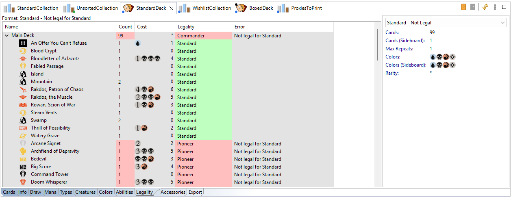

ManaDesk knows the legality of every card in every format (Standard, Pioneer, Modern, Legacy, Vintage, Pauper, Commander, Brawl, Oathbreaker, Pauper Commander, Old School, Premodern...), from the Scryfall card data. It shows whether a card is legal, banned or restricted.
The Card Info view lists the card's legality in each format. You can also show the Legality column in a list, and filter by legality in the filter dialog.
Open the deck and click its Legality tab.

In Commander and the other commander formats, every card must match the color identity of the commander (put the commander in the deck's sideboard). Cards that don't are shown as Color Identity Invalid. In Oathbreaker, the planeswalker sets the colors.
Legality uses the card's color identity, as Scryfall gives it. The difference with the extended color identity is explained in the Columns reference.
See also: The Deck view · Creating a deck